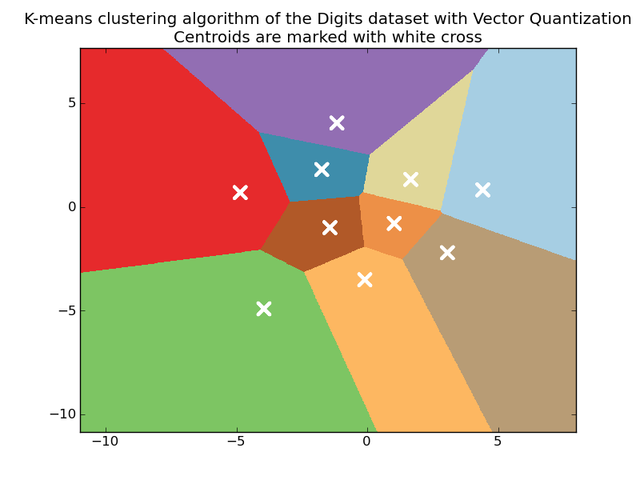

A demo of K-Means clustering on the handwritten digits data¶
Comparing various initialization strategies in terms of runtime and quality of the results.
TODO: explode the ouput of the cluster labeling and digits.target groundtruth as categorical boolean arrays of shape (n_sample, n_unique_labels) and measure the Pearson correlation as an additional measure of the clustering quality.
Python source code: plot_kmeans_digits.py
print __doc__
from time import time
import numpy as np
import pylab as pl
from sklearn import metrics
from sklearn.cluster import KMeans
from sklearn.datasets import load_digits
from sklearn.decomposition import PCA
from sklearn.preprocessing import scale
np.random.seed(42)
digits = load_digits()
data = scale(digits.data)
n_samples, n_features = data.shape
n_digits = len(np.unique(digits.target))
labels = digits.target
print "n_digits: %d" % n_digits
print "n_features: %d" % n_features
print "n_samples: %d" % n_samples
print
print "Raw k-means with k-means++ init..."
t0 = time()
km = KMeans(init='k-means++', k=n_digits, n_init=10).fit(data)
print "done in %0.3fs" % (time() - t0)
print "Inertia: %f" % km.inertia_
print "Homogeneity: %0.3f" % metrics.homogeneity_score(labels, km.labels_)
print "Completeness: %0.3f" % metrics.completeness_score(labels, km.labels_)
print "V-measure: %0.3f" % metrics.v_measure_score(labels, km.labels_)
print "Adjusted Rand Index: %0.3f" % \
metrics.adjusted_rand_score(labels, km.labels_)
print
print "Raw k-means with random centroid init..."
t0 = time()
km = KMeans(init='random', k=n_digits, n_init=10).fit(data)
print "done in %0.3fs" % (time() - t0)
print "Inertia: %f" % km.inertia_
print "Homogeneity: %0.3f" % metrics.homogeneity_score(labels, km.labels_)
print "Completeness: %0.3f" % metrics.completeness_score(labels, km.labels_)
print "V-measure: %0.3f" % metrics.v_measure_score(labels, km.labels_)
print "Adjusted Rand Index: %0.3f" % \
metrics.adjusted_rand_score(labels, km.labels_)
print
print "Raw k-means with PCA-based centroid init..."
# in this case the seeding of the centers is deterministic, hence we run the
# kmeans algorithm only once with n_init=1
t0 = time()
pca = PCA(n_components=n_digits).fit(data)
km = KMeans(init=pca.components_, k=n_digits, n_init=1).fit(data)
print "done in %0.3fs" % (time() - t0)
print "Inertia: %f" % km.inertia_
print "Homogeneity: %0.3f" % metrics.homogeneity_score(labels, km.labels_)
print "Completeness: %0.3f" % metrics.completeness_score(labels, km.labels_)
print "V-measure: %0.3f" % metrics.v_measure_score(labels, km.labels_)
print "Adjusted Rand Index: %0.3f" % \
metrics.adjusted_rand_score(labels, km.labels_)
print
# Plot k-means++ form on a 2D plot using PCA
print "Raw k-means with k-means++ init, reduced to two dimensions using PCA..."
t0 = time()
reduced_data = PCA(n_components=2).fit_transform(data)
kmeans = KMeans(init='k-means++', k=n_digits, n_init=10).fit(reduced_data)
print "done in %0.3fs" % (time() - t0)
# Step size of the mesh. Decrease to increase the quality of the VQ.
h = .02 # point in the mesh [x_min, m_max]x[y_min, y_max].
# Plot the decision boundary. For that, we will asign a color to each
x_min, x_max = reduced_data[:, 0].min() - 1, reduced_data[:, 0].max() + 1
y_min, y_max = reduced_data[:, 1].min() - 1, reduced_data[:, 1].max() + 1
xx, yy = np.meshgrid(np.arange(x_min, x_max, h), np.arange(y_min, y_max, h))
# Obtain labels for each point in mesh. Use last trained model.
Z = kmeans.predict(np.c_[xx.ravel(), yy.ravel()])
# Put the result into a color plot
Z = Z.reshape(xx.shape)
pl.set_cmap(pl.cm.Paired)
pl.pcolormesh(xx, yy, Z)
# Plot the centroids as a white X
centroids = kmeans.cluster_centers_
pl.scatter(centroids[:, 0], centroids[:, 1],
marker='x', s=169, linewidths=3,
color='w')
pl.title('K-means clustering algorithm of the Digits dataset '
'with Vector Quantization\n'
'Centroids are marked with white cross')
pl.axis('tight')
pl.show()